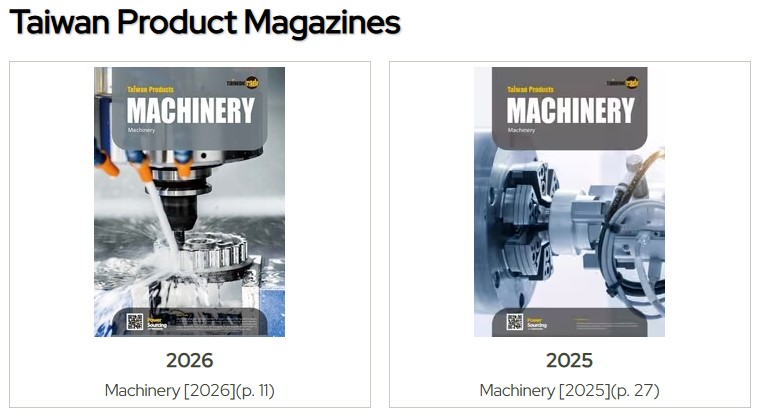

產品型錄操作調整
第三次需求訪談 2026-08-28
凌網資訊 Simmy
一、產品型錄需求訪談
ＲＦＰ 附件二六項，彙整成五個調整位置 → 直接開操作原型展示
二、首頁設計稿選擇 → 建站引導原型
依 ８／２１ 會議調整後的設計稿，請貴處擇一款；接著檢視建站引導原型
三、本次需求確認
ＴＰ 專輯下架時間 ｜ 待貴處提供之文案
| 調整位置 | 內容 |
|---|---|
| ① 型錄內容設定 | 附件二 1於採購資訊頁籤中新增三項欄位：線下價格、供應能力及交貨時間，並同步於 EP 產品詳細頁進行顯示；將既有 Payment 欄位名稱調整為 Payment Details for Offline Orders、移除 also 附件二 3調整頁籤順序並更改名稱：基本資料 → 產品圖片 → 供應能力與報價（原採購資訊） → 產品規格 → 產品認證 → 多媒體與附件 → 線上販售 |
| ② 型錄啟用設定 | 附件二 4新增顯示型錄之開關，讓會員可自行決定是否於企業網以外平台（例如外語網、商機推薦等）顯示，預設為顯示 |
| ③ 產品型錄列表 | 附件二 5新增價格資訊欄位，供會員於瀏覽列表時即可快速確認產品價格（價格需 2 欄：線上價格和線下價格） |
| ④ 企業網－有開販售 | 附件二 1三項新增欄位同步於 EP 產品詳細頁顯示 附件二 6於 CP 頁下方新增「附件」頁籤，並將現行附件內容移至該新增頁籤中統一呈現 |
| ⑤ 企業網－未開販售 | 附件二 1・6同上；另將 Payment 欄位名稱調整為 Payment Details for Offline Orders、移除 also |
| ＡＰＩ | 附件二 2外語網相關 API 調整。本項工作範圍僅包含 API 等相關功能調整，不含前端頁面之設計與呈現 |
| 題 | 問題 | 選項 |
|---|---|---|
| 1 | 線下價格是否保留「(Reference)」？ ＲＦＰ 寫 Price (Offline)，靖慈簡報畫的是 Price…(Reference)，原型兩個都保留 |
保留／不保留 |
| 2 | 第一個頁籤是否刪除「產品」兩個字？ 現況為「產品基本資料」，ＲＦＰ 的新順序寫的是「基本資料」 |
改為「基本資料」／維持原名 |
| 3 | Payment Details for Offline Orders 的位置要不要統一？ 原型依靖慈簡報：未開販售放三欄下方、有開販售放三欄上方 |
統一放三欄上方／統一放三欄下方 維持現況兩種 |
| 題 | 問題 | 選項 |
|---|---|---|
| 4 | 「顯示型錄」開關的名稱是否調整？ 此開關控制的是企業網以外平台（外語網、商機推薦等）的曝光，現行名稱未指明對象，易與企業網本身的顯示混淆 |
改為「同時曝光於台灣經貿網」 維持「顯示型錄」／貴處另訂 |
| 5 | 型錄列表新增兩欄的呈現方式？ 13 吋筆電實測：現況 15 欄已超出 73px，再加兩欄超出 287px |
方案Ａ 併入產品資訊欄 與現況同寬，仍超出 73px 方案Ｂ 語系狀態收合 1053px，完整放得下 5-1 選Ｂ時的價格欄位整併一欄餘裕 84px／分兩欄餘裕 17px 5-2 列表的線上價格僅顯示總區間／區間＋可展開明細 |
| 6 | 三個新欄位的多語文字由誰設定？ 選項文字（day(s)、Negotiable 等）可於 ADM 依語系設定，方式與「最少訂購量」單位相同 |
貴處自行設定 提供各語系翻譯，由凌網代為上架 |
已依 ８／２１ 會議調整，並於聯絡我們表單新增登入提示；兩款差異為主要按鈕的樣式，其餘完全相同——請貴處擇一
白底黑框黑字 ｜ 可上下捲動、點圖另開原尺寸
８／２１ 四項調整均已完成：Slider 箭頭保留並調高透明度、頁尾徽章改一排、移除 QR code、置底功能列重新設計
白底黑框黑字 ｜ 點圖另開原尺寸
深灰漸層底白字 ｜ 點圖另開原尺寸
| 項目 | 調整內容 |
|---|---|
| 版型預設元件 | 調整為八項並重新排序，移除「聯繫與訂閱」、聯絡我們表單置底；元件無資料時前台不顯示該區塊 |
| 圖文模板 | 範本示意圖移至「顯示樣式」並加編號 |
| 台灣經貿網標誌 | 版型設定新增顯示開關，預設為顯示 （非本案範圍，凌網同意免費新增） |
| 元件樣式 | 由線框稿改為前台呈現樣板 （非本案範圍，凌網同意免費新增） |
操作原型： ＳＵ 建站引導

| 現況 | ＴＰ 專輯目前僅出現在企業網「About Us」頁的 Taiwan Product Magazines 區塊 |
|---|---|
| 做法 | 由程式移除，預計 １２ 月系統上線，未來不再顯示 ＴＰ 專輯，需討論確切移除上線時程。 |
| 項目 | 提出場合 | 說明 |
|---|---|---|
| ① 聯絡我們表單－附件提示詞文案 | ８／１１ 第二次需求訪談 | 手機版需精簡，避免折行 |
| ② 語系說明區塊文案 | ８／１１ 第二次需求訪談 | 停用英文語系時的警語與說明，目前為凌網擬稿 |
| 聯絡我們表單－Message 預設文字 | ８／２１ 首頁ＲＷＤ版型確認會議 | 依該次決議沿用現行系統文案，不另提供 |
① 附件提示詞的位置
② 語系說明區塊的位置（紅字為凌網擬稿）
本次會議結束
今天的確認結果與待辦事項，會後以書面送給貴處。
其他問題歡迎現在提出。